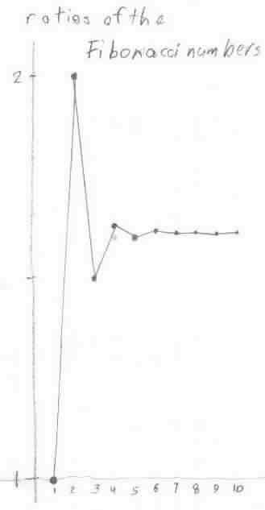

Geoffrey works on the Fibonacci numbers
Geoffrey worked on the Fibonacci numbers and got their ratios. He graphed the ratios, and saw they formed a sequence that was alternating and approached some number 1.618033... He graphed the ratios:

In Wells' "Dictionary of Curious and Interesting Numbers" he found that (Sqrt 5 +1)/2 = 1.61803... , was an irrational number, and was called The Divine Proportion or The Golden Mean.
Don and Geoffrey wrote a program in basic to get the ratios. Then that evening, Geoffrey and his Dad wrote a program in Mathematica to get the Fibonacci numbers. The following 9 lines formed the input, the output was the first 22 Fibonacci numbers below:1, 1, 2, 3, 5, 8, 13, 21, 34, 55, 89, 144, 233, 377, 610, 987, 1597, 2584, 4181, 6765, 10946, 17711,